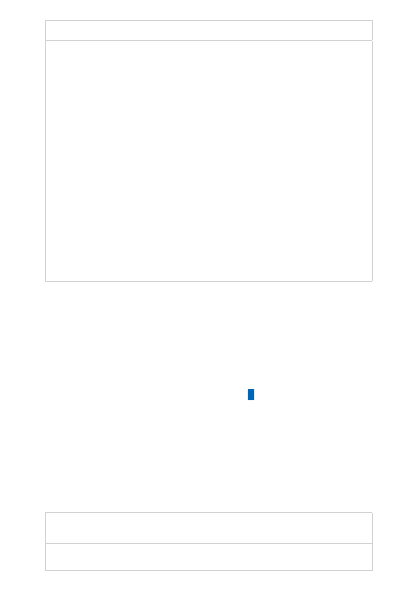

System message
User
Assistant
You are an AI
assistant that helps
people find
information.
You will read a paragraph, and then issue queries to a
search engine in order to fact-check it.
---
PARAGRAPH
John Smith is married to Lucy Smith. They have five kids,
and he works as a software engineer at Microsoft. What
search queries should I do to fact-check this?
---
Now you will extract factual claims, and issue queries to
fact-check them. When issuing a query, use the function
SEARCH("query")
FACTUAL CLAIMS
1. John Smith is
married to Lucy
Smith
2. They have five
kids
3. He works as a
software
engineer at
Microsoft
QUERIES
SEARCH("John
Smith married
Lucy Smith")
SEARCH("John
Smith family
size")
SEARCH("John
Smith Microsoft
software
engineer")
Notice the use of clear syntax to differentiate the sections and prime the output. In this
simple example, breaking the task down from one to two steps is not very dramatic, but
when trying to do this for a larger piece of text with many factual claims, breaking the
task down can make a significant difference.
Sometimes we can get the model to use an affordance instead of relying on its own
parameters for information and answers. Search, for example, can be an affordance to
help mitigate against fabricated answers, and to get up-to-date information.
One simple way to use an affordance is to stop generation once the affordance calls are
generated by the model, then paste the outcomes back into the prompt. Below is an
example of what the follow-up call could be after doing the SEARCH calls above. Notice
how we pasted the search results into the prompt and replaced the previous SEARCH
calls.
System
message
User
Assistant
You are an
AI assistant
You will read a paragraph,
extract factual claims, and
- John Smith is married to Lucy Smith: Confirmed.
Snippet [1] and [2] both mention John Smith's wife
Use of affordances